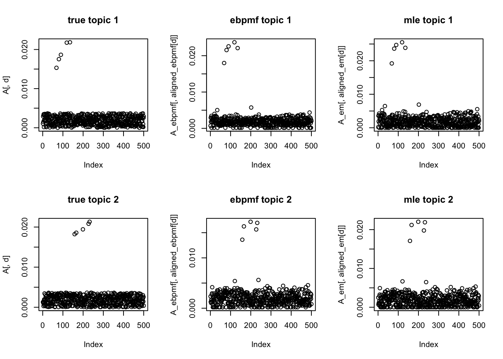

Last updated: 2019-12-18
Checks: 6 1
Knit directory: ebpmf_demo/
This reproducible R Markdown analysis was created with workflowr (version 1.5.0). The Checks tab describes the reproducibility checks that were applied when the results were created. The Past versions tab lists the development history.
Great! Since the R Markdown file has been committed to the Git repository, you know the exact version of the code that produced these results.
Great job! The global environment was empty. Objects defined in the global environment can affect the analysis in your R Markdown file in unknown ways. For reproduciblity it’s best to always run the code in an empty environment.
The command set.seed(20190923) was run prior to running the code in the R Markdown file. Setting a seed ensures that any results that rely on randomness, e.g. subsampling or permutations, are reproducible.
Great job! Recording the operating system, R version, and package versions is critical for reproducibility.
To ensure reproducibility of the results, delete the cache directory nmf_anchor_word3_cache and re-run the analysis. To have workflowr automatically delete the cache directory prior to building the file, set delete_cache = TRUE when running wflow_build() or wflow_publish().
Great job! Using relative paths to the files within your workflowr project makes it easier to run your code on other machines.
Great! You are using Git for version control. Tracking code development and connecting the code version to the results is critical for reproducibility. The version displayed above was the version of the Git repository at the time these results were generated.
Note that you need to be careful to ensure that all relevant files for the analysis have been committed to Git prior to generating the results (you can use wflow_publish or wflow_git_commit). workflowr only checks the R Markdown file, but you know if there are other scripts or data files that it depends on. Below is the status of the Git repository when the results were generated:
Ignored files:
Ignored: .Rhistory
Ignored: .Rproj.user/
Ignored: analysis/compare_GH_cache/
Ignored: analysis/nmf_anchor_word3_cache/
Ignored: analysis/nmf_sparse10_cache/
Ignored: analysis/nmf_sparse8_cache/
Ignored: analysis/nmf_sparse9_cache/
Untracked files:
Untracked: Rplot.png
Untracked: Untitled.Rmd
Untracked: Untitled.html
Untracked: analysis/.ipynb_checkpoints/
Untracked: analysis/Experiment_ebpmf_simple.Rmd
Untracked: analysis/debug_ebpmf_two_gamma.Rmd
Untracked: analysis/demo_ebpmf_beta_gamma.Rmd
Untracked: analysis/demo_ebpmf_two_gamma2.Rmd
Untracked: analysis/demo_ebpmf_two_gamma_cache_old/
Untracked: analysis/draft.Rmd
Untracked: analysis/ebpm_gamma_mixture_experiment.Rmd
Untracked: analysis/ebpmf_demo.Rmd
Untracked: analysis/ebpmf_rank1_demo2.Rmd
Untracked: analysis/investigate_nmf_sparse.Rmd
Untracked: analysis/play_prior.Rmd
Untracked: analysis/plot_g.Rmd
Untracked: analysis/softmax_experiments.ipynb
Untracked: cache/
Untracked: data/nmf_anchor_word3_A.csv
Untracked: data/nmf_anchor_word3_W.csv
Untracked: data/nmf_anchor_word3_X.csv
Untracked: data/nmf_sparse8_fit_ebpmf_gm_mle.Rds
Untracked: data/nmf_sparse8_fit_ebpmf_gm_mlem.Rds
Untracked: data/swimmer.mat
Untracked: figure/
Untracked: verbose_log_1571583163.21966.txt
Untracked: verbose_log_1571583324.71036.txt
Untracked: verbose_log_1571583741.94199.txt
Untracked: verbose_log_1571588102.40356.txt
Unstaged changes:
Modified: .gitignore
Modified: analysis/Compare_ebpmf_nmf.Rmd
Modified: analysis/Compare_ebvaepm_ebpm.Rmd
Modified: analysis/Experiment_ebpmf_rank1.Rmd
Modified: analysis/demo_ebpm_beta_gamma2.Rmd
Modified: analysis/ebpm_demo.Rmd
Modified: analysis/nmf_anchor_word2.Rmd
Modified: analysis/nmf_sparse.Rmd
Modified: analysis/nmf_sparse2.Rmd
Modified: analysis/nmf_sparse3.Rmd
Modified: analysis/nmf_sparse6.Rmd
Modified: analysis/nmf_sparse7.Rmd
Modified: analysis/nmf_sparse8.Rmd
Modified: analysis/nmf_sparse9.Rmd
Modified: analysis/softmax_experiments.Rmd
Modified: analysis/test_ebpm_gamma_mixture_single_scale.Rmd
Modified: data/nmf_sparse8_fit_ebpmf_gm.Rds
Note that any generated files, e.g. HTML, png, CSS, etc., are not included in this status report because it is ok for generated content to have uncommitted changes.
These are the previous versions of the R Markdown and HTML files. If you’ve configured a remote Git repository (see ?wflow_git_remote), click on the hyperlinks in the table below to view them.
| File | Version | Author | Date | Message |
|---|---|---|---|---|
| Rmd | 5da0f0b | zihao12 | 2019-12-18 | nmf_anchor_word3.Rmd with updated ebpm and ebpmf |
| html | c98027b | zihao12 | 2019-12-18 | Build site. |
| Rmd | 3bdff06 | zihao12 | 2019-12-18 | nmf_anchor_word3.Rmd with updated ebpm and ebpmf |
| html | be67c88 | zihao12 | 2019-12-18 | Build site. |
| Rmd | 1d6f905 | zihao12 | 2019-12-18 | nmf_anchor_word3.Rmd with updated ebpm and ebpmf |
| html | 1766be1 | zihao12 | 2019-12-18 | Build site. |
| Rmd | 697a178 | zihao12 | 2019-12-18 | nmf_anchor_word3.Rmd |
I simulate data under the anchor words assumption, using multinomial model:
Let \(A \in R^{p \times k}\) be \(k\) topics (each column sums to one, nonnegative). We require that for each topic, there is at least one “anchor word” \(i_k\) so that \(A_{i_k, j} > 0, A_{i \neq i_k, j} = 0\). I relax the strictly zero to some small value compared to.
Then \(Prob = A W\), \(X_{Ij} \sim Multinom(N_j, Prob_{Ij})\) (note \(X \in R^{p \times n}\)).
rm(list = ls())
library(NNLM)
library(ebpm)
devtools::load_all("../ebpmf.alpha")
source("code/misc.R")
set.seed(123)
n = 100
p = 500
k = 5
anchor_word_per_topic = 5
sep_val = 0.5
M = round(p/3)
A = matrix(runif(p*k), ncol = k)
W = matrix(replicate(n*k, 0), nrow = k)
X = matrix(replicate(n*p, 0), nrow = p)
## get set of anchor words (id)
## each topic has only 10 anchor word
S = sort(sample(x = 1:p, size = anchor_word_per_topic*k, replace = TRUE))
start_id = seq(1, anchor_word_per_topic*(k-1) + 1, length.out = k)
## generate A
for(d in 1:k){
if(d < k){an_words = S[start_id[d]:(start_id[d+1]-1)]}
else{an_words = S[start_id[d]:length(S)]}
A[an_words, d] = sort(2 * k * sep_val * runif(n = anchor_word_per_topic, min = 0.4, max = 0.6))
}
A = t(t(A)/colSums(A))
## generate W
## each document has at most 3 topics (roughly)
for(i in 1:n){
cardin = sample(x = 1:floor(k/3), size = 1)
top_supp = sample(x = 1:k, size = cardin, replace = TRUE)
W[top_supp,i] = runif(cardin)
W[, i] = W[,i]/sum(W[,i])
}
prob_m = A %*% W
for(i in 1:n){
n_word = rpois(n = 1, lambda = M)
X[,i] = rmultinom(n = 1, size = n_word, prob = prob_m[,i])
}
print(sprintf("percentage of 0s: %f", sum(X == 0)/(n*p)))[1] "percentage of 0s: 0.733820"## save simulation for possible comparison with `anchorwords`
write.table(A, "data/nmf_anchor_word3_A.csv", row.names = FALSE, col.names = FALSE)
write.table(W, "data/nmf_anchor_word3_W.csv", row.names = FALSE, col.names = FALSE)
write.table(X, "data/nmf_anchor_word3_X.csv", row.names = FALSE, col.names = FALSE)## fit with MLE_EM
fit_mle_em = NNLM::nnmf(A = t(X), k = k, loss = "mkl", method = "scd", max.iter = 10000)
lf_mlf_em = poisson2multinom(F = t(fit_mle_em$H), L = fit_mle_em$W)
A_em = lf_mlf_em$F
W_em = t(lf_mlf_em$L)
Warning: The above code chunk cached its results, but it won’t be re-run if previous chunks it depends on are updated. If you need to use caching, it is highly recommended to also set knitr::opts_chunk$set(autodep = TRUE) at the top of the file (in a chunk that is not cached). Alternatively, you can customize the option dependson for each individual chunk that is cached. Using either autodep or dependson will remove this warning. See the knitr cache options for more details.
Let’s see if we can choose topics by anchor words
find_closest <- function(v, V){
min_dist = Inf
cand = -1
for(i in 1:ncol(V)){
curr_dist = sum((v - V[,i])^2)
if(curr_dist < min_dist){
min_dist = curr_dist
cand = i
}
}
return(cand)
}
anchor_set = apply(A, 2, which.max)
anchor_set_em = apply(A_em, 2, which.max)
aligned_em = replicate(k, -1)
for(d in 1:k){
if(d < k){anchor_words = S[start_id[d]:(start_id[d+1]-1)]}
else{anchor_words = S[start_id[d]:length(S)]}
## only look at those anchor words and look at which topic is closest
curr_id = find_closest(A[anchor_words,d], A_em[anchor_words,])
aligned_em[d] = curr_id
}
## aligned topics
aligned_em[1] 2 5 1 5 2fit with EBPMF
#library(ebpmf.alpha)
#eps = .Machine$double.xmin
eps = 0
qg0 = ebpmf.alpha::initialize_qg_from_LF(L0 = fit_mle_em$W + eps, F0 = t(fit_mle_em$H + eps))
fit_ebpmf_two_gamma = ebpmf.alpha::ebpmf_two_gamma(X = t(X), K = k, maxiter.out = 200, verbose = FALSE)
Warning: The above code chunk cached its results, but it won’t be re-run if previous chunks it depends on are updated. If you need to use caching, it is highly recommended to also set knitr::opts_chunk$set(autodep = TRUE) at the top of the file (in a chunk that is not cached). Alternatively, you can customize the option dependson for each individual chunk that is cached. Using either autodep or dependson will remove this warning. See the knitr cache options for more details.
lf_ebpmf = poisson2multinom(F = fit_ebpmf_two_gamma$qg$qfs_mean, L = fit_ebpmf_two_gamma$qg$qls_mean)
A_ebpmf = lf_ebpmf$F
W_ebpmf = t(lf_ebpmf$L)
anchor_set_ebpmf = apply(A_ebpmf, 2, which.max)
aligned_ebpmf = replicate(k, -1)
for(d in 1:k){
if(d < k){anchor_words = S[start_id[d]:(start_id[d+1]-1)]}
else{anchor_words = S[start_id[d]:length(S)]}
## only look at those anchor words and look at which topic is closest
curr_id = find_closest(A[anchor_words,d], A_ebpmf[anchor_words,])
aligned_ebpmf[d] = curr_id
}
## aligned topics
aligned_ebpmf[1] 2 2 2 4 5par(mfrow=c(2,3))
for(d in 1:k){
plot(A[,d],main = sprintf("true topic %d", d))
plot(A_ebpmf[,aligned_ebpmf[d]], main = sprintf("ebpmf topic %d", d))
plot(A_em[,aligned_em[d]], main = sprintf("mle topic %d", d))
}
Compare likelihood \(p(X|A, W)\).
Lam_true = A %*% W %*% diag(colSums(X))
Lam_em = A_em %*% W_em %*% diag(colSums(X))
Lam_ebpmf = A_ebpmf %*% W_ebpmf %*% diag(colSums(X))
## likelihood for truth
sum(dpois(x = X, lambda = Lam_true,log = TRUE))[1] -33702.93## likelihood for em result
sum(dpois(x = X, lambda = Lam_em,log = TRUE))[1] -Inf## likelihood for ebpmf result
sum(dpois(x = X, lambda = Lam_ebpmf,log = TRUE))[1] -33533.96Compare ELBO
For truth and MLE result, I initialize q,g with them and run 1 iteration.
## ELBOP FOR EBPMF
fit_ebpmf_two_gamma$ELBO[length(fit_ebpmf_two_gamma$ELBO)][1] -31836.8## ELBO for TRUE
qg_true = ebpmf.alpha::initialize_qg_from_LF(F0 = A, L0 = t(W %*% diag(colSums(X))))
fit_tmp = ebpmf.alpha::ebpmf_two_gamma(X = t(X), K = k, qg = qg_true, maxiter.out = 1)
fit_tmp$ELBO[1] -33112.64## ELBO FOR MLE
qg_mle = ebpmf.alpha::initialize_qg_from_LF(F0 = t(fit_mle_em$H), L0 = fit_mle_em$W)
fit_mle = ebpmf.alpha::ebpmf_two_gamma(X = t(X), K = k, qg = qg_mle, maxiter.out = 1)
fit_mle$ELBO[1] -33952.6plot(fit_ebpmf_two_gamma$ELBO)
| Version | Author | Date |
|---|---|---|
| be67c88 | zihao12 | 2019-12-18 |
fit_ebpmf_two_gamma$qg$gfs[[1]]
[[1]]$pi0
[1] 0.1768064
[[1]]$shape1
[1] 0.04879992
[[1]]$scale1
[1] 1.755008
[[1]]$shape2
[1] 5.238596
[[1]]$scale2
[1] 0.02974523
[[2]]
[[2]]$pi0
[1] 0.9394495
[[2]]$shape1
[1] 1.979872
[[2]]$scale1
[1] 17015.37
[[2]]$shape2
[1] 1441.865
[[2]]$scale2
[1] 0.4676074
[[3]]
[[3]]$pi0
[1] 0.8314575
[[3]]$shape1
[1] 4.696825
[[3]]$scale1
[1] 0.02049472
[[3]]$shape2
[1] 0.05942946
[[3]]$scale2
[1] 0.965655
[[4]]
[[4]]$pi0
[1] 0.8730108
[[4]]$shape1
[1] 3.67695
[[4]]$scale1
[1] 0.03369736
[[4]]$shape2
[1] 0.1170308
[[4]]$scale2
[1] 1.149055
[[5]]
[[5]]$pi0
[1] 0.908722
[[5]]$shape1
[1] 3.556422
[[5]]$scale1
[1] 0.04837401
[[5]]$shape2
[1] 0.1236699
[[5]]$scale2
[1] 2.12093fit_ebpmf_two_gamma$qg$gls[[1]]
[[1]]$pi0
[1] 0.8200001
[[1]]$shape1
[1] 472.3616
[[1]]$scale1
[1] 2.220663e-06
[[1]]$shape2
[1] 9187.253
[[1]]$scale2
[1] 0.000237277
[[2]]
[[2]]$pi0
[1] 0.2299998
[[2]]$shape1
[1] 219293.9
[[2]]$scale1
[1] 4.778205e-11
[[2]]$shape2
[1] 0.01448762
[[2]]$scale2
[1] 2.575804e-06
[[3]]
[[3]]$pi0
[1] 0.8501326
[[3]]$shape1
[1] 0.04039224
[[3]]$scale1
[1] 0.5169918
[[3]]$shape2
[1] 1257.125
[[3]]$scale2
[1] 0.002777506
[[4]]
[[4]]$pi0
[1] 0.79
[[4]]$shape1
[1] 439.4494
[[4]]$scale1
[1] 3.713104e-05
[[4]]$shape2
[1] 1205.819
[[4]]$scale2
[1] 0.002201647
[[5]]
[[5]]$pi0
[1] 0.22989
[[5]]$shape1
[1] 6778.913
[[5]]$scale1
[1] 0.0002736684
[[5]]$shape2
[1] 0.01792965
[[5]]$scale2
[1] 0.4869895ebpmf with two gammas has some optimization issues: ELBO sometimes jump to a very large number; sometimes get ELBO gets NaN (in iteration 448 in this example). Need to figure it out.
ELBO: Truth > ebpmf > MLE
ebpmf_two_gamma seems to be small advantages over mle result.
sessionInfo()R version 3.5.1 (2018-07-02)
Platform: x86_64-apple-darwin15.6.0 (64-bit)
Running under: macOS 10.14
Matrix products: default
BLAS: /Library/Frameworks/R.framework/Versions/3.5/Resources/lib/libRblas.0.dylib
LAPACK: /Library/Frameworks/R.framework/Versions/3.5/Resources/lib/libRlapack.dylib
locale:
[1] en_US.UTF-8/en_US.UTF-8/en_US.UTF-8/C/en_US.UTF-8/en_US.UTF-8
attached base packages:
[1] stats graphics grDevices utils datasets methods base
other attached packages:
[1] ebpmf.alpha_0.1.4 testthat_2.2.1 ebpm_0.0.0.9006 NNLM_0.4.2
loaded via a namespace (and not attached):
[1] Rcpp_1.0.2 compiler_3.5.1 later_0.8.0
[4] git2r_0.26.1 workflowr_1.5.0 remotes_2.1.0
[7] prettyunits_1.0.2 tools_3.5.1 digest_0.6.22
[10] pkgbuild_1.0.3 pkgload_1.0.2 evaluate_0.14
[13] memoise_1.1.0 rlang_0.4.1 rstudioapi_0.10
[16] cli_1.1.0 yaml_2.2.0 xfun_0.8
[19] withr_2.1.2 stringr_1.4.0 knitr_1.25
[22] desc_1.2.0 fs_1.3.1 gtools_3.8.1
[25] devtools_2.2.1.9000 rprojroot_1.3-2 glue_1.3.1
[28] R6_2.4.0 processx_3.3.1 rmarkdown_1.13
[31] sessioninfo_1.1.1 mixsqp_0.2-3 callr_3.2.0
[34] magrittr_1.5 whisker_0.3-2 usethis_1.5.1
[37] backports_1.1.5 promises_1.0.1 ps_1.3.0
[40] htmltools_0.3.6 ellipsis_0.3.0 assertthat_0.2.1
[43] httpuv_1.5.1 stringi_1.4.3 crayon_1.3.4